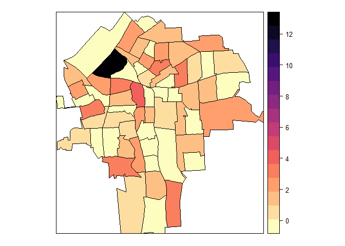
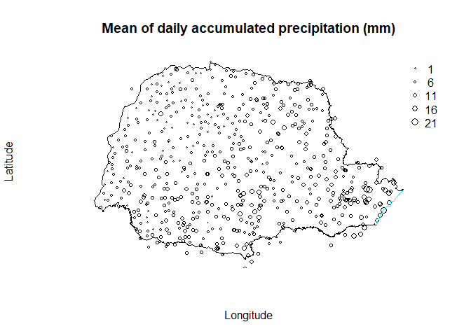
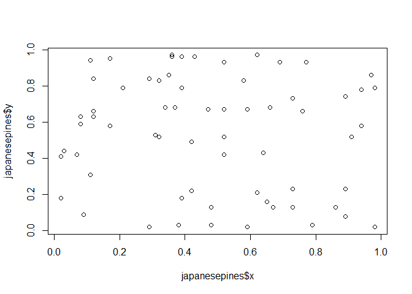
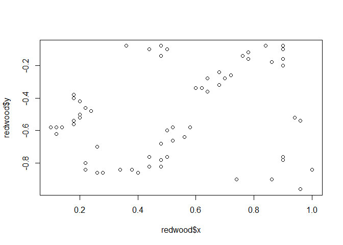
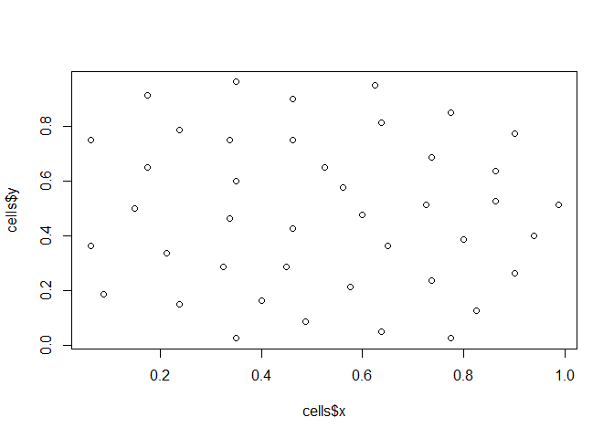

空间数据分析（一）空间数据分析与空间数据类型

什么是空间数据分析？
空间数据是对现实世界中带有空间属性的事物和现象的时空特征及过程的抽象表达和定量描述。而空间数据分析就是寻找空间数据中隐含的信息的一系列方法。简单来说就是我们希望从空间数据中挖掘出空间隐含的价值。
空间数据的类型
空间数据的类型可以大致分为三种：
- lattice data/栅格数据，例如某个省的手足口病发病率数据，某个省的GDP数据。
- geostatistical data/地统计数据，例如某个省水文站的降雨数据，某个省环境监测站的空气质量数据。
- point pattern data/点模式数据，例如某个森林内某种树木的位置数据，某个区域内共享单车的位置数据。
这三种空间数据类型不是绝对的，它们可以根据需要互相转换。例如某个区域内共享单车的位置数据属于点模式数据，但是经过汇总统计，可以将其转换为栅格数据。
举个例子
下面给出一些空间数据的例子，以帮助理解。
栅格数据
首先加载一个R包，里面带了一份可以作为示例的栅格数据：
library(DClusterm)
data(NY8)
然后我们查看这个数据的摘要信息，此处省略了输出内容中的无关字段：
summary(NY8)
## Object of class SpatialPolygonsDataFrame
## Coordinates:
## min max
## r1 358241.9 480393.1
## r2 4649755.4 4808545.2
## Is projected: TRUE
## proj4string :
## [+proj=utm +zone=18 +ellps=WGS84 +units=m +no_defs]
## Data attributes:
## AREANAME AREAKEY X
## NA : 83 36007000100: 1 Min. :-55.482
## Syracuse city : 63 36007000200: 1 1st Qu.:-19.460
## Binghamton city : 18 36007000300: 1 Median :-12.469
## Remainder of Clay tow: 6 36007000400: 1 Mean :-11.309
## Johnson City village : 5 36007000500: 1 3rd Qu.: -1.213
## Onondaga town : 5 36007000600: 1 Max. : 53.509
## (Other) :101 (Other) :275
## Y POP8 Cases
## Min. :-75.29 Min. : 9 Min. :0.00014
## 1st Qu.:-30.60 1st Qu.: 2510 1st Qu.:0.30928
## Median : 31.97 Median : 3433 Median :1.88876
## Mean : 4.98 Mean : 3764 Mean :2.10676
## 3rd Qu.: 39.12 3rd Qu.: 4889 3rd Qu.:3.08284
## Max. : 56.41 Max. :13015 Max. :9.28601
我们用病例数除以总人口数得到发病率，再用发病率乘以人口数得到预期值，最后用病例数除以预期值得到标准发病率，进行疾病制图：
rate <- sum(NY8$Cases) / sum(NY8$POP8)
NY8$Expected <- NY8$POP8 * rate
NY8$SMR <- NY8$Cases / NY8$Expected
syracuse <- which(NY8$AREANAME == "Syracuse city")
为简便起见，我们使用spplot函数进行疾病制图的绘制：
library(viridis)
spplot(NY8[syracuse, ], "SMR", #at = c(0.6, 0.9801, 1.055, 1.087, 1.125, 13),
col.regions = rev(magma(16))) #gray.colors(16, 0.9, 0.4))

地统计数据
地统计数据是指定点监测或提取的数据，例如降雨数据，我们不可能把地球上每一寸地方的降雨量都测算出来，所以通常是设定一个监测站收集降雨数据，然后利用空间插值等方法得到某个区域的降雨情况。
同样的，我们加载一个包含示例数据的R包，获取示例数据。
library(INLA)
data(PRprec)
dim(PRprec)
## [1] 616 368
示例数据是巴西某个州的降雨数据，来自616个监测站点，一共365天的降雨量数据，前三列分别是经纬度和海拔，之后是天数的标记，每一列代表每一天。
PRprec$precMean <- rowMeans(PRprec[, 3 + 1:31], na.rm = TRUE)
plot(PRborder, type = "l", asp = 1, axes = FALSE, main = paste("Mean of daily accumulated precipitation (mm)"))
points(PRprec[1:2], cex = 0.3 + PRprec$precMean / 20)
legend("topright", format(seq(1, 21, 5)), bty = "n", pch = 1, pt.cex = 0.3 + seq(1, 21, 5) / 20)
lines(PRborder[1034:1078, ], col = "cyan")

蓝色线段表示海岸线，从图中可见，离海岸近的地方降雨更加充沛一些。
点模式数据
和定点监测的地统计数据不同，点模式数据是指空间位置随机的事物或现象,它们呈现出的模式主要有三种：
- 随机模式，没有规律可循
- 聚集模式，局部的密度远高于总体水平
- 规则模式，错落有致，规则分布
具有代表性的示例数据如下：
library(spatstat.data)
plot(japanesepines)

plot(redwood)

plot(cells)

总结
空间数据分析的起点就是了解空间数据，包括它的类型，它的属性等等。为了后续的建模分析，起始阶段简单的探索性分析也是必不可少的，而空间数据的特性对可视化有更加强烈的要求，不进行可视化几乎很难捕捉到空间数据的微妙之处。
本文作者：WenQian Dong
版权声明：本博客所有文章除特别声明外，均采用 CC BY-NC-SA 3.0 许可协议。转载请注明出处！
本文链接：https://wqdchn.github.io/r-spatial-demo1.html